KALMAN FILTER
Kalman filter application.
Contents
System
Supondo um sistema não linear descrito por uma equação diferencial estocástica vetorial dada por:
\[ \dot{{\bf x}} = {\bf f} ( {\bf x}(t) , t ) + {\bf G} (t) {\bf w} (t) \]
onde
- \({\bf w}\) é de processo branco gaussiano. \({\bf w}(t)\) ~ \(N ( {\bf 0} , {\bf Q}(t) )\)
- \({\bf f} ( {\bf x}(t) , t )\) é uma função vetorial de dimensão \(n\)
- \({\bf x}(t)\) é o vetor de estados \((n \times 1)\)
- \({\bf G}\) é uma matriz conhecida \((n \times s)\)
Plant
Neste exemplo, a planta é representada por um modelo dinâmico não linear baseado no modelo físico ilustrado na seguinte figura

O modelo da planta é composto pelos modelos não lineares de maior complexidade disponível no pacote, ou seja, o modelo de veículo Vehicle Simple Nonlinear com o modelo de pneu Tire Pacejka. A descrição das equações de movimento podem ser encontradas em Simple equations of motion
% O pacote é importado com o comando: % import VehicleDynamicsLateral.*
O pneu escolhido Tire Pacejka é inicializado com os parâmetros predefinidos (default).
TirePlant = TirePacejka; disp(TirePlant)
TirePacejka with properties:
a0: 1
a1: 0
a2: 800
a3: 3000
a4: 50
a5: 0
a6: 0
a7: -1
a8: 0
a9: 0
a10: 0
a11: 0
a12: 0
a13: 0
O modelo de veículo Vehicle Simple Nonlinear é inicializado, também, com os parâmetros predefinidos (default). Em seguida o pneu escolhido é passado para o veículo.
VehiclePlant = VehicleSimpleNonlinear; VehiclePlant.tire = TirePlant; disp(VehiclePlant)
VehicleSimpleNonlinear with properties:
mT: 1300
IT: 10000
a: 1.6154
b: 1.8846
mF0: 700
mR0: 600
lT: 3.5000
nF: 2
nR: 2
wT: 2
muy: 0.8000
tire: [1x1 VehicleDynamicsLateral.TirePacejka]
deltaf: 0
Fxf: 0
Fxr: 0
Maneuver
Este tópico apresenta a manobra do veículo (plant) que deverá ser estimada pelo Filtro de Kalman.
Choosing simulation parameters:
T = 6; % Total simulation time [s] resol = 50; % Resolution TSPAN = 0:T/resol:T; % Time span [s]
Inicializando o simulador e simulando.
simulatorPlant = Simulator(VehiclePlant, TSPAN); simulatorPlant.dPSI0 = 0.35; simulatorPlant.Simulate
Obtendo os parâmetros da simulação.
disp(simulatorPlant)
Simulator with properties:
Vehicle: [1x1 VehicleDynamicsLateral.VehicleSimpleNonlinear]
TSpan: [51x1 double]
X0: 0
Y0: 0
PSI0: 0
PHI0: []
THETA0: []
V0: 20
ALPHAT0: 0
dPSI0: 0.3500
dPHI0: []
dTHETA0: []
XT: [51x1 double]
YT: [51x1 double]
PSI: [51x1 double]
PHI: []
THETA: []
VEL: [51x1 double]
ALPHAT: [51x1 double]
dPSI: [51x1 double]
dPHI: []
dTHETA: []
Retrieving states
XTPlant = simulatorPlant.XT; YTPlant = simulatorPlant.YT; PSIPlant = simulatorPlant.PSI; vTPlant = simulatorPlant.VEL; ALPHATPlant = simulatorPlant.ALPHAT; dPSIPlant = simulatorPlant.dPSI; XOUTPlant = [XTPlant YTPlant PSIPlant vTPlant ALPHATPlant dPSIPlant];
Gerando os gráficos da manobra do carro (plant)
gPlant = Graphics(simulatorPlant);
gPlant.TractorColor = 'r';
gPlant.Frame();

close all % Closing figures
Modelo
O modelo utilizado no algoritmo de estimação é baseado no mesmo modelo físico considerado no modelo da planta. Além disso, o modelo parte da premissa de que o projetista do estimador não tem conhecimento adequado da curva característica do pneu. Logo, o modelo de veículo é igual ao utilizado na planta, porém, o modelo de pneu é dado pelo modelo linear Tire linear, resultando num modelo do sistema de menor complexidade (em relação à planta) e com mais hipóteses simplificadoras.
Inicializando o pneu
TireModel = TireLinear; disp(TireModel)
TireLinear with properties:
k: 40000
Choosing model vehicle
VehicleModel = VehicleSimpleNonlinear; VehicleModel.tire = TireModel; disp(VehicleModel)
VehicleSimpleNonlinear with properties:
mT: 1300
IT: 10000
a: 1.6154
b: 1.8846
mF0: 700
mR0: 600
lT: 3.5000
nF: 2
nR: 2
wT: 2
muy: 0.8000
tire: [1x1 VehicleDynamicsLateral.TireLinear]
deltaf: 0
Fxf: 0
Fxr: 0
Simulador com o mesmo vetor TSPAN e simulação
simulatorModel = Simulator(VehicleModel, TSPAN); simulatorModel.dPSI0 = 0.35; simulatorModel.Simulate; disp(simulatorModel)
Simulator with properties:
Vehicle: [1x1 VehicleDynamicsLateral.VehicleSimpleNonlinear]
TSpan: [51x1 double]
X0: 0
Y0: 0
PSI0: 0
PHI0: []
THETA0: []
V0: 20
ALPHAT0: 0
dPSI0: 0.3500
dPHI0: []
dTHETA0: []
XT: [51x1 double]
YT: [51x1 double]
PSI: [51x1 double]
PHI: []
THETA: []
VEL: [51x1 double]
ALPHAT: [51x1 double]
dPSI: [51x1 double]
dPHI: []
dTHETA: []
Retrieving states
XTModel = simulatorModel.XT; YTModel = simulatorModel.YT; PSIModel = simulatorModel.PSI; vTModel = simulatorModel.VEL; ALPHATModel = simulatorModel.ALPHAT; dPSIModel = simulatorModel.dPSI;
A manobra gerada pelo modelo escolhido pelo projetista a partir da mesma condição inicial é ilustrada na figura a seguir
gModel = Graphics(simulatorModel);
gModel.TractorColor = 'g';
gModel.Frame();
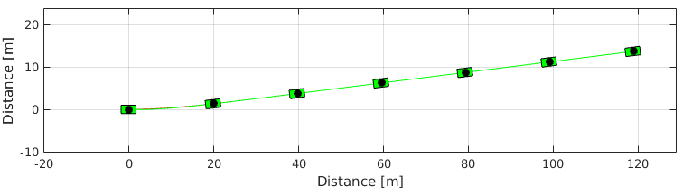 close all % Closing figures
Plant and model comparison
Comparando o modelo de pneu
g = 9.81; FzF = VehiclePlant.mF0*g; FzR = VehiclePlant.mR0*g; muy = VehiclePlant.muy; nF = VehiclePlant.nF; nR = VehiclePlant.nR; alpha= 0:0.5:15; alpha = alpha*pi/180; FyLin = - TireModel.Characteristic(alpha); FyFPac = - TirePlant.Characteristic(alpha, FzF, muy); FyRPac = - TirePlant.Characteristic(alpha, FzR, muy); figure ax = gca; set(ax,'NextPlot','add','Box','on','XGrid','on','YGrid','on') plot(alpha(1:floor(end/2))*180/pi,FyLin(1:floor(end/2)),'r') plot(alpha*180/pi,FyFPac,'g') plot(alpha*180/pi,FyRPac,'g--') xlabel('alpha [deg]') ylabel('Fy [N]') l = legend('Linear','Pacejka F','Pacejka R'); set(l,'Location','SouthEast')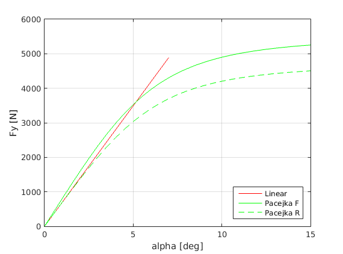
Comparando os estados
figure ax = gca; set(ax,'NextPlot','add','Box','on','XGrid','on','YGrid','on') plot(TSPAN,XTPlant,'r') plot(TSPAN,XTModel,'r--') xlabel('Time [s]') ylabel('Distance X [m]') figure ax = gca; set(ax,'NextPlot','add','Box','on','XGrid','on','YGrid','on') plot(TSPAN,YTPlant,'g') plot(TSPAN,YTModel,'g--') xlabel('Time [s]') ylabel('Distance Y [m]') figure ax = gca; set(ax,'NextPlot','add','Box','on','XGrid','on','YGrid','on') plot(TSPAN,PSIPlant,'b') plot(TSPAN,PSIModel,'b--') xlabel('Time [s]') ylabel('PSI [rad]') figure ax = gca; set(ax,'NextPlot','add','Box','on','XGrid','on','YGrid','on') plot(TSPAN,vTPlant,'c') plot(TSPAN,vTModel,'c--') xlabel('Time [s]') ylabel('vT [m/s]') figure ax = gca; set(ax,'NextPlot','add','Box','on','XGrid','on','YGrid','on') plot(TSPAN,ALPHATPlant,'m'), plot(TSPAN,ALPHATModel,'m--'), xlabel('Time [s]') ylabel('ALPHAT [rad/s]') figure ax = gca; set(ax,'NextPlot','add','Box','on','XGrid','on','YGrid','on') plot(TSPAN,dPSIPlant,'k') plot(TSPAN,dPSIModel,'k--') xlabel('Time [s]') ylabel('dPSI [rad/s]')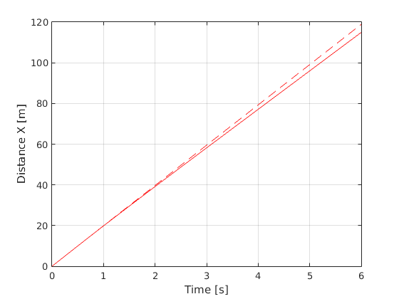 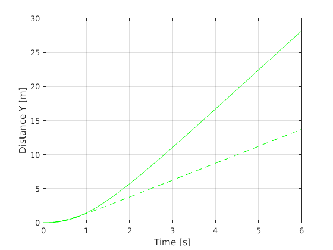 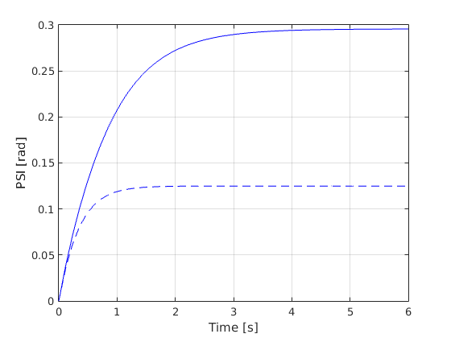 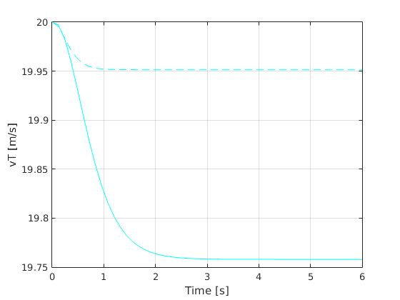 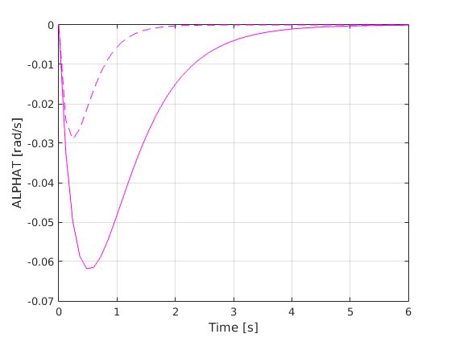 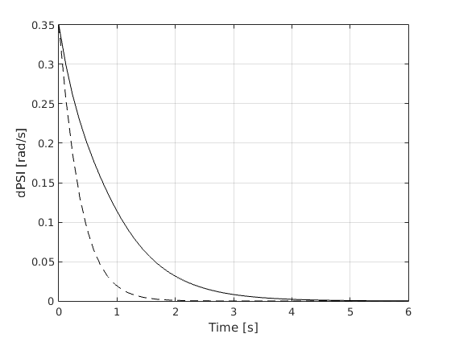
Comparando a aceleração longitudinal e transversal
saidasPlant = [XTPlant YTPlant PSIPlant vTPlant ALPHATPlant dPSIPlant]; matDerivEstadosPlant = zeros(size(saidasPlant)); for i = 1:size(saidasPlant,1) auxil = simulatorPlant.Vehicle.Model(1,saidasPlant(i,:),TSPAN); matDerivEstadosPlant(i,:) = auxil'; end dXTPlant = matDerivEstadosPlant(:,1); dYTPlant = matDerivEstadosPlant(:,2); dPSIPlant = matDerivEstadosPlant(:,3); dvTPlant = matDerivEstadosPlant(:,4); dALPHATPlant = matDerivEstadosPlant(:,5); ddPSIPlant = matDerivEstadosPlant(:,6); ddXPlant = dvTPlant.*cos(PSIPlant + ALPHATPlant) - vTPlant.*(dPSIPlant + dALPHATPlant).*sin(PSIPlant + ALPHATPlant); ddYPlant = dvTPlant.*sin(PSIPlant + ALPHATPlant) + vTPlant.*(dPSIPlant + dALPHATPlant).*cos(PSIPlant + ALPHATPlant); ACELNumPlant = [(ddXPlant.*cos(PSIPlant) - ddYPlant.*sin(PSIPlant)) (-ddXPlant.*sin(PSIPlant) + ddYPlant.*cos(PSIPlant))]; saidasModel = [XTModel YTModel PSIModel vTModel ALPHATModel dPSIModel]; matDerivEstadosModel = zeros(size(saidasModel)); for i = 1:size(saidasModel,1) auxil = simulatorModel.Vehicle.Model(1,saidasModel(i,:),TSPAN); matDerivEstadosModel(i,:) = auxil'; end dXTModel = matDerivEstadosModel(:,1); dYTModel = matDerivEstadosModel(:,2); dPSIModel = matDerivEstadosModel(:,3); dvTModel = matDerivEstadosModel(:,4); dALPHATModel = matDerivEstadosModel(:,5); ddPSIModel = matDerivEstadosModel(:,6); ddXModel = dvTModel.*cos(PSIModel + ALPHATModel) - vTModel.*(dPSIModel + dALPHATModel).*sin(PSIModel + ALPHATModel); ddYModel = dvTModel.*sin(PSIModel + ALPHATModel) + vTModel.*(dPSIModel + dALPHATModel).*cos(PSIModel + ALPHATModel); ACELNumModel = [(ddXModel.*cos(PSIModel) - ddYModel.*sin(PSIModel)) (-ddXModel.*sin(PSIModel) + ddYModel.*cos(PSIModel))]; figure ax = gca; set(ax,'NextPlot','add','Box','on','XGrid','on','YGrid','on') plot(TSPAN,ACELNumPlant(:,1),'r') plot(TSPAN,ACELNumPlant(:,2),'g') plot(TSPAN,ACELNumModel(:,1),'r--') plot(TSPAN,ACELNumModel(:,2),'g--') xlabel('time [s]') ylabel('acc. [m/s]') l = legend('AX Plant','AY Plant','AX Model','AY Model'); set(l,'Location','NorthEast')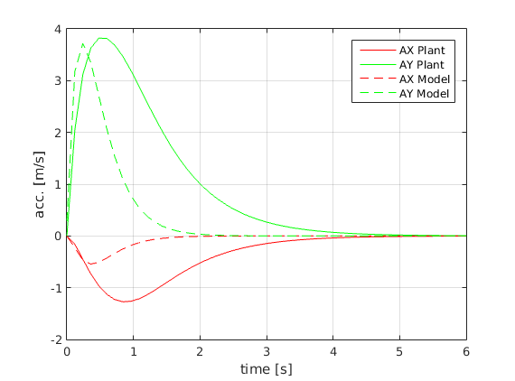
Comparando as derivadas dos estados
% figure % ax = gca; % set(ax,'NextPlot','add','Box','on','XGrid','on','YGrid','on') % plot(TSPAN,dXTPlant,'r') % plot(TSPAN,dXTModel,'r--') % xlabel('Time [s]') % ylabel('dX [m/s]') % l = legend('Plant','Model'); % set(l,'Location','SouthWest') % % figure % ax = gca; % set(ax,'NextPlot','add','Box','on','XGrid','on','YGrid','on') % plot(TSPAN,dYTPlant,'r') % plot(TSPAN,dYTModel,'r--') % xlabel('Time [s]') % ylabel('dY [m/s]') % l = legend('Plant','Model'); % set(l,'Location','NorthWest') % % figure % ax = gca; % set(ax,'NextPlot','add','Box','on','XGrid','on','YGrid','on') % plot(TSPAN,dPSIPlant,'r') % plot(TSPAN,dPSIModel,'r--') % xlabel('Time [s]') % ylabel('dPSI [rad/s]') % l = legend('Plant','Model'); % set(l,'Location','NorthEast') % % figure % ax = gca; % set(ax,'NextPlot','add','Box','on','XGrid','on','YGrid','on') % plot(TSPAN,dvTPlant,'r') % plot(TSPAN,dvTModel,'r--') % xlabel('Time [s]') % ylabel('dvT [m/s]') % l = legend('Plant','Model'); % set(l,'Location','SouthEast') % % figure % ax = gca; % set(ax,'NextPlot','add','Box','on','XGrid','on','YGrid','on') % plot(TSPAN,dALPHATPlant,'r'), % plot(TSPAN,dALPHATModel,'r--'), % xlabel('Time [s]') % ylabel('dALPHAT [rad/s]') % l = legend('Plant','Model'); % set(l,'Location','NorthEast') % % figure % ax = gca; % set(ax,'NextPlot','add','Box','on','XGrid','on','YGrid','on') % plot(TSPAN,ddPSIPlant,'r') % plot(TSPAN,ddPSIModel,'r--') % xlabel('Time [s]') % ylabel('ddPSI [rad/s2]') % l = legend('Plant','Model'); % set(l,'Location','SouthEast')
Comparação - Diferença de 10 m na direção X no momento da curva.
gModel.Frame();
hold on
gPlant.Frame();
gModel.Frame();
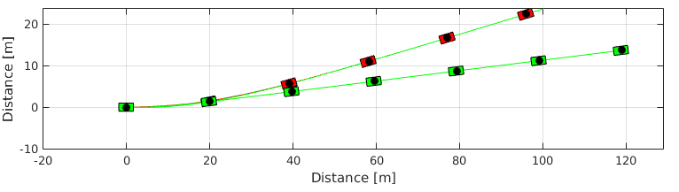 close all % Closing figures
Model linearization
A expressão geral da equação linearizada é obtida neste tópico utilizando o processador simbólico.
Definindo os símbolos:
syms XT YT PSI vT ALPHAT dPSI mT IT a b K
Slip angles
ALPHAF = atan((vT * sin(ALPHAT) + a * dPSI)/(vT * cos(ALPHAT))); % Dianteiro ALPHAR = atan((vT * sin(ALPHAT) - b * dPSI)/(vT * cos(ALPHAT))); % Traseiro
pretty(ALPHAF)
/ a dPSI + vT sin(ALPHAT) \
atan| ----------------------- |
\ vT cos(ALPHAT) /
pretty(ALPHAR)
/ b dPSI - vT sin(ALPHAT) \
-atan| ----------------------- |
\ vT cos(ALPHAT) /
Lateral forces
FyF = -K*ALPHAF; FyR = -K*ALPHAR;
pretty(FyF)
/ a dPSI + vT sin(ALPHAT) \
-K atan| ----------------------- |
\ vT cos(ALPHAT) /
pretty(FyR)
/ b dPSI - vT sin(ALPHAT) \
K atan| ----------------------- |
\ vT cos(ALPHAT) /
State equations
f1 = vT * cos(ALPHAT + PSI); f2 = vT * sin(ALPHAT + PSI); f3 = dPSI; f4 = (FyF * sin(ALPHAT) + FyR * sin(ALPHAT))/(mT); f5 = (FyF * cos(ALPHAT) + FyR * cos(ALPHAT) - mT * vT * dPSI) / (mT * vT); f6 = (FyF * a - FyR * b) / IT; f = [f1 ; f2 ; f3 ; f4 ; f5 ; f6];
pretty(f)
/ vT cos(ALPHAT + PSI) \
| |
| vT sin(ALPHAT + PSI) |
| |
| dPSI |
| |
| K #2 sin(ALPHAT) - K #1 sin(ALPHAT) |
| - ----------------------------------- |
| mT |
| |
| dPSI mT vT + K cos(ALPHAT) #2 - K cos(ALPHAT) #1 |
| - ------------------------------------------------ |
| mT vT |
| |
| K a #2 + K b #1 |
| - --------------- |
\ IT /
where
/ b dPSI - vT sin(ALPHAT) \
#1 == atan| ----------------------- |
\ vT cos(ALPHAT) /
/ a dPSI + vT sin(ALPHAT) \
#2 == atan| ----------------------- |
\ vT cos(ALPHAT) /
Vetor de estados
States = [XT ; YT ; PSI ; vT ; ALPHAT ; dPSI];
pretty(States)
/ XT \ | | | YT | | | | PSI | | | | vT | | | | ALPHAT | | | \ dPSI /
O sistema linearizado é escrito na forma
\[ \dot{\bf x} = {\bf F} {\bf x} \]
onde \({\bf F}\) é a matriz dinâmica do modelo linear que é calculada a partir da equação não linear expandida em série de Taylor e truncada nos termos de primeira ordem. Logo, a matriz \({\bf F}\) é dada por
\[ {\bf F} = \left[ \frac{\partial f_i}{\partial x_j} \right]_{n \times n} \]
onde \(i\) e \(j\) indicam as equações e variáveis de estado utilizadas no cálculo correpondente à posição \((i,j)\) da matriz jacobiana.
F = jacobian(f,States); F = simplify(F);
pretty(F)
--
|
|
|
| [0, 0, #6, cos(ALPHAT + PSI), #6, 0],
|
--
[0, 0, #7, sin(ALPHAT + PSI), #7, 0], [0, 0, 0, 0, 0, 1],
--
|
| 2 2 2 2
| 0, 0, 0, -(K dPSI sin(2 ALPHAT) (a b dPSI - a b dPSI
--
2 2
+ sin(ALPHAT) a b dPSI vT 4 - a vT + b vT ))/(mT #2 #1 2),
K vT sin(ALPHAT) #5 K vT sin(ALPHAT) #4
#8 + ------------------- + -------------------
#2 #1
- ----------------------------------------------,
mT
K a vT sin(2 ALPHAT) K b vT sin(2 ALPHAT) --
-------------------- - -------------------- |
2 #2 2 #1 |
- ------------------------------------------- |,
mT --
--
|
| #8 K a dPSI #3 K b dPSI #3
| 0, 0, 0, ------ - ----------- + -----------,
| 2 mT vT #2 mT vT #1
-- mT vT
K vT cos(ALPHAT) #5 K vT cos(ALPHAT) #4
------------------- - K sin(ALPHAT) #9 + -------------------
#2 #1
- ------------------------------------------------------------,
mT vT
K a vT #3 K b vT #3 --
mT vT - --------- + --------- |
#2 #1 |
- ----------------------------- |,
mT vT |
--
--
|
|
| 2 2 2 2
| 0, 0, 0, (K dPSI cos(ALPHAT) (2 a b dPSI - sin(ALPHAT) a b dPSI vT
--
2 2 2 2 2
2 + a vT + sin(ALPHAT) a b dPSI vT 2 + b vT ))/(IT #2 #1),
2 2 -- --
K a vT #5 K b vT #4 K a vT cos(ALPHAT) K b vT cos(ALPHAT) | |
--------- - --------- ------------------- + ------------------- | |
#2 #1 #2 #1 | |
- ---------------------, - ----------------------------------------- | |
IT IT -- |
--
where
2 2 2
#1 == b dPSI - sin(ALPHAT) b dPSI vT 2 + vT
2 2 2
#2 == a dPSI + sin(ALPHAT) a dPSI vT 2 + vT
2
#3 == sin(ALPHAT) - 1
#4 == vT - b dPSI sin(ALPHAT)
#5 == vT + a dPSI sin(ALPHAT)
#6 == -vT sin(ALPHAT + PSI)
#7 == vT cos(ALPHAT + PSI)
#8 == K cos(ALPHAT) #9
/ a dPSI + vT sin(ALPHAT) \ / b dPSI - vT sin(ALPHAT) \
#9 == atan| ----------------------- | - atan| ----------------------- |
\ vT cos(ALPHAT) / \ vT cos(ALPHAT) /
Medição
Continuando simbolicamente, as grandezas medidas são:
- Posição X
- Posição Y
- Aceleração angular
- aceleração longitudinal
- aceleração transversal
Para isso, utiliza-se as relações:
\[ \dot{x} = v_{\rm T} \cos \left( \psi + \alpha_{\rm T} \right) \]
\[ \dot{y} = v_{\rm T} \sin \left( \psi + \alpha_{\rm T} \right) \]
Aceleração
\[ \ddot{x} = \dot{v}_{\rm T} \cos \left( \psi + \alpha_{\rm T} \right) - v_{\rm T} \left( \dot{\psi} + \dot{\alpha}_{\rm T} \right) \sin \left( \psi + \alpha_{\rm T} \right) \]
\[ \ddot{y} = \dot{v}_{\rm T} \sin \left( \psi + \alpha_{\rm T} \right) + v_{\rm T} \left( \dot{\psi} + \dot{\alpha}_{\rm T} \right) \cos \left( \psi + \alpha_{\rm T} \right) \]
Implementando
ddX = f4*cos(PSI + ALPHAT) - vT*(dPSI + f5)*sin(PSI + ALPHAT); ddY = f4*sin(PSI + ALPHAT) + vT*(dPSI + f5)*cos(PSI + ALPHAT);
Estes valores obtidos são as acelerações escritas na base fixa \(\{ O {\bf i} {\bf j} {\bf k} \}\). A projeção destas grandezas na base móvel \(\{ O {\bf t}_x {\bf t}_y {\bf t}_z \}\) é feita através da equação
\[ {\bf a} = \left( \ddot{x} \cos \psi - \ddot{y} \sin \psi \right) {\bf t}_x + \left( - \ddot{x} \sin \psi + \ddot{y} \sin \psi \right) {\bf t}_y \]
Implementando
ACEL = [ddX*cos(PSI) - ddY*sin(PSI) ; -ddX*sin(PSI) + ddY*cos(PSI)]; ACEL = simplify(ACEL);
pretty(ACEL)
/ K sin(2 PSI) #1 \
| --------------- |
| mT |
| |
| K #1 |
| - ---- |
\ mT /
where
/ a dPSI + vT sin(ALPHAT) \ / b dPSI - vT sin(ALPHAT) \
#1 == atan| ----------------------- | - atan| ----------------------- |
\ vT cos(ALPHAT) / \ vT cos(ALPHAT) /
A equação de observações não linear é dada por
\[ {\bf z}_k = {\bf h} ({\bf x}_k) + {\bf v}_k \]
com
\({\bf v}_k\) ~ \(N ( {\bf 0} , {\bf R}_k )\)
Linearizando termos
\[ {\bf z}_k = {\bf H} {\bf x}_k + {\bf v}_k \]
onde
\[ {\bf H} = \left[ \frac{\partial h_i}{\partial x_j} \right]_{m \times n} \]
ou seja, a matriz de saídas {\bf H} é a matriz jacobiana da equação de ACEL em relação aos estados.
Implementando
medNonlinear = [XT ; YT ; f6 ; ACEL]; H = jacobian(medNonlinear,States); H = simplify(H);
pretty(H)
--
|
|
|
| [1, 0, 0, 0, 0, 0], [0, 1, 0, 0, 0, 0],
--
--
|
|
| 2 2 2 2
| 0, 0, 0, (K dPSI cos(ALPHAT) (2 a b dPSI - sin(ALPHAT) a b dPSI vT
--
2 2 2 2 2
2 + a vT + sin(ALPHAT) a b dPSI vT 2 + b vT ))/(IT #7 #6),
2 2 --
K a vT #5 K b vT #4 K a vT cos(ALPHAT) K b vT cos(ALPHAT) |
--------- - --------- ------------------- + ------------------- |
#7 #6 #7 #6 |
- ---------------------, - ----------------------------------------- |,
IT IT --
--
| 0, 0,
--
/
| K cos(2
\
/ / a dPSI + vT sin(ALPHAT) \
PSI) | atan| ----------------------- |
\ \ vT cos(ALPHAT) /
/ b dPSI - vT sin(ALPHAT) \ \ \
- atan| ----------------------- | | 2 |/mT,
\ vT cos(ALPHAT) / / /
K dPSI sin(2 PSI) cos(ALPHAT) #1 K sin(2 PSI) #2 K sin(2 PSI) #3 --
--------------------------------, ---------------, --------------- |,
mT #7 #6 mT mT --
--
|
|
-- K dPSI cos(ALPHAT) #1 K #2 K #3 -- |
| 0, 0, 0, - ---------------------, - ----, - ---- | |
-- mT #7 #6 mT mT -- --
where
2 2 2 2 2 2
#1 == a b dPSI - a b dPSI + sin(ALPHAT) a b dPSI vT 4 - a vT + b vT
vT #5 vT #4
#2 == ----- + -----
#7 #6
a vT cos(ALPHAT) b vT cos(ALPHAT)
#3 == ---------------- - ----------------
#7 #6
#4 == vT - b dPSI sin(ALPHAT)
#5 == vT + a dPSI sin(ALPHAT)
2 2 2
#6 == b dPSI - sin(ALPHAT) b dPSI vT 2 + vT
2 2 2
#7 == a dPSI + sin(ALPHAT) a dPSI vT 2 + vT
Verificação da linearização
Para verificar o procedimento de linearização, um ponto de operação referente à movimentação do veículo em linha reta com uma velocidade prescrita \(v_0\) é utilizado. Esta escolha é típica e pode ser verificada facilmente na literatura.
Definindo \(v_0\)
syms v0
Obtendo a matriz dinâmica
A = subs(F,States,[0 ; 0 ; 0 ; v0 ; 0 ; 0]);
pretty(A)
/ 0, 0, 0, 1, 0, 0 \ | | | 0, 0, v0, 0, v0, 0 | | | | 0, 0, 0, 0, 0, 1 | | | | 0, 0, 0, 0, 0, 0 | | | | K a K b | | mT v0 + --- - --- | | 2 K v0 v0 | | 0, 0, 0, 0, - -----, - ----------------- | | mT v0 mT v0 | | | | 2 2 | | K a K b | | ---- + ---- | | K a - K b v0 v0 | | 0, 0, 0, 0, - ---------, - ----------- | \ IT IT /
Obtendo a matriz de saídas
C = subs(H,States,[0 ; 0 ; 0 ; v0 ; 0 ; 0]);
pretty(C)
/ 1, 0, 0, 0, 0, 0 \ | | | 0, 1, 0, 0, 0, 0 | | | | 2 2 | | K a K b | | ---- + ---- | | K a - K b v0 v0 | | 0, 0, 0, 0, - ---------, - ----------- | | IT IT | | | | 0, 0, 0, 0, 0, 0 | | | | / a b \ | | K | -- - -- | | | 2 K \ v0 v0 / | | 0, 0, 0, 0, - ---, - ------------- | \ mT mT /
Filtro estendido de Kalman
Implementação do algoritmo
Matriz que distribui o ruído na equação do estado constante
G = eye(6); % Matriz identidade (6 x 6)
Matrizes de covariância
Q = eye(6); R = eye(5);
Matriz
P0 = eye(6);
Recuperando as condições iniciais usadas acima
X0Num = simulatorModel.X0; Y0Num = simulatorModel.Y0; PSI0Num = simulatorModel.PSI0; VEL0Num = simulatorModel.V0; ALPHAT0Num = simulatorModel.ALPHAT0; dPSI0Num = simulatorModel.dPSI0; x0 = [ X0Num ; Y0Num ; PSI0Num ; VEL0Num ; ALPHAT0Num ; dPSI0Num ]; x0 = zeros(6,1); x0(4)=20;
Recuperando os parâmetros do veículo
mTNum = VehicleModel.mT; ITNum = VehicleModel.IT; aNum = VehicleModel.a; bNum = VehicleModel.b; KNum = TireModel.k; parameters = [mTNum ITNum aNum bNum KNum];
Obtendo e verificando a aceleração que vai ser medida.
Inicializando o tempo de intervalo entre uma observação e outra.
intervalo = 0.1;
t = 0:intervalo:T; % Vetor com os instantes de observação
Prealocando
XOUTopt = zeros(length(t) + 1,length(States)); % Estimativa dos estados após atualização Popt = zeros(length(t) + 1,1); % Matriz de covariância após atualização Pantes = zeros(length(t) + 1,1); % Matriz de covariância antes da atualização KKalmanopt = ones(length(t) + 1,1); % Ganho de Kalman
Atribuindo os primeiros valores
XOUTopt(1,:) = x0';
XOUTantes(1,:) = x0';
Pantes(1,1) = norm(P0);
Popt(1,1) = norm(P0);
% Distribuição dos erros
pesos = [5; 5; 0.1; 0.5; 0.5];
Iteração
for j = 1:length(t) % Índice variando por todos os instantes de observação % Vetor de tempo de integração para a etapa de propagação tspan = t(j):intervalo/100:t(j)+intervalo; % Obtendo as medidas da iteração z = [interp1(TSPAN,XTPlant(:,1),t(j)) ; interp1(TSPAN,YTPlant(:,1),t(j)) ; interp1(TSPAN,ddPSIPlant(:,1),t(j)) ; interp1(TSPAN,ACELNumPlant(:,1),t(j)) ; interp1(TSPAN,ACELNumPlant(:,2),t(j))]; z = z + pesos.*(rand(5,1)-0.5); Fnum = subs(F,[States.' mT IT a b K],[x0.' parameters]); Fnum = double(Fnum); Hnum = subs(H,[States.' mT IT a b K],[x0.' parameters]); Hnum = double(Hnum); % Ciclo de propagação % Transformando a matriz PMat0 \((6 \times 6)\) em um vetor P0 \((1 \times 36)\) P0 = reshape(P0',[1 36]); [TOUT,Pout] = ode45(@(t,P) IntCov(t,P,Fnum,G,Q),tspan,P0); Pmatrix = reshape(Pout(end,:),[6 6])'; simulatorKalman = Simulator(VehicleModel, tspan); % Definindo as condições iniciais simulatorKalman.X0 = x0(1); simulatorKalman.Y0 = x0(2); simulatorKalman.PSI0 = x0(3); simulatorKalman.V0 = x0(4); simulatorKalman.ALPHAT0 = x0(5); simulatorKalman.dPSI0 = x0(6); % Simulando simulatorKalman.Simulate() XTKalman = simulatorKalman.XT; YTKalman = simulatorKalman.YT; PSIKalman = simulatorKalman.PSI; vTKalman = simulatorKalman.VEL; ALPHATKalman = simulatorKalman.ALPHAT; dPSIKalman = simulatorKalman.dPSI; XOUTKalman = [XTKalman YTKalman PSIKalman vTKalman ALPHATKalman dPSIKalman]; % Ciclo de atualização ACELKalman = subs(medNonlinear,[States.' mT IT a b K],[XOUTKalman(end,:) parameters]); ACELKalman = double(ACELKalman); KKalman = Pmatrix*Hnum' / (Hnum*Pmatrix*Hnum' + R); XKalman = XOUTKalman(end,:)' + KKalman*(z - ACELKalman); PKalman = Pmatrix - KKalman*Hnum*Pmatrix; x0 = XKalman; P0 = PKalman; XOUTopt(j+1,:) = XKalman'; XOUTantes(j+1,:) = XOUTKalman(end,:); Popt(j+1) = norm(PKalman); Pantes(j+1) = norm(Pmatrix); KKalmanopt(j+1) = norm(KKalman); end
Comparação
figure ax = gca; set(ax,'NextPlot','add','Box','on','XGrid','on','YGrid','on') plot(TSPAN,XOUTPlant(:,1),'r') p = plot(t(2:end),XOUTopt(2:end-1,1),'r--'); set(p,'Marker','*') l = legend('Plant','Estim'); set(l,'Location','SouthEast') xlabel('tempo [s]') ylabel('x [m]') figure ax = gca; set(ax,'NextPlot','add','Box','on','XGrid','on','YGrid','on') plot(TSPAN,XOUTPlant(:,2),'g') p = plot(t(2:end),XOUTopt(2:end-1,2),'g--'); set(p,'Marker','*') l = legend('Plant','Estim'); set(l,'Location','SouthEast') xlabel('tempo [s]') ylabel('y [m]') figure ax = gca; set(ax,'NextPlot','add','Box','on','XGrid','on','YGrid','on') plot(TSPAN,XOUTPlant(:,3),'b') p = plot(t(2:end),XOUTopt(2:end-1,3),'b--'); set(p,'Marker','*') l = legend('Plant','Estim'); set(l,'Location','SouthEast') xlabel('tempo [s]') ylabel('PSI [rad]') figure ax = gca; set(ax,'NextPlot','add','Box','on','XGrid','on','YGrid','on') plot(TSPAN,XOUTPlant(:,4),'c') p = plot(t(2:end),XOUTopt(2:end-1,4),'c--'); set(p,'Marker','*') l = legend('Plant','Estim'); set(l,'Location','SouthEast') xlabel('tempo [s]') ylabel('vT [m/s]') figure ax = gca; set(ax,'NextPlot','add','Box','on','XGrid','on','YGrid','on') plot(TSPAN,XOUTPlant(:,5),'m') p = plot(t(2:end),XOUTopt(2:end-1,5),'m--'); set(p,'Marker','*') l = legend('Plant','Estim'); set(l,'Location','SouthEast') xlabel('tempo [s]') ylabel('ALPHAT [rad/s]') figure ax = gca; set(ax,'NextPlot','add','Box','on','XGrid','on','YGrid','on') plot(TSPAN,XOUTPlant(:,6),'k') p = plot(t(2:end),XOUTopt(2:end-1,6),'k--'); set(p,'Marker','*') l = legend('Plant','Estim'); set(l,'Location','SouthEast') xlabel('tempo [s]') ylabel('dPSI [rad/s]')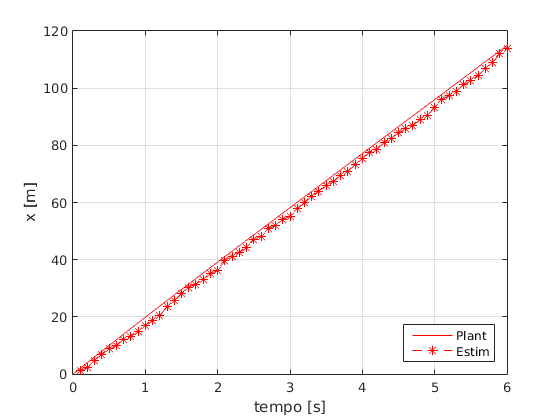 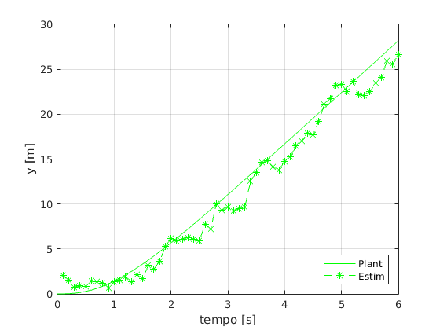 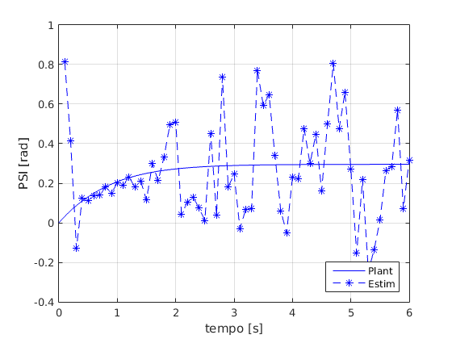 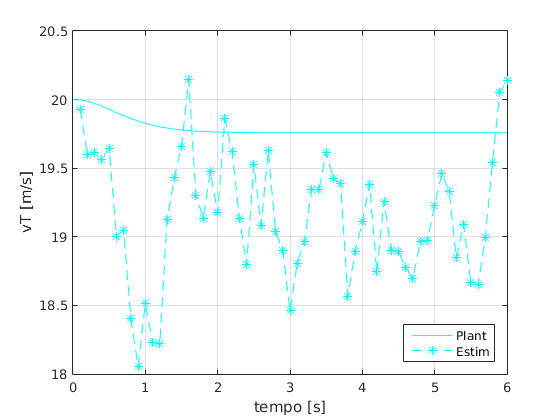 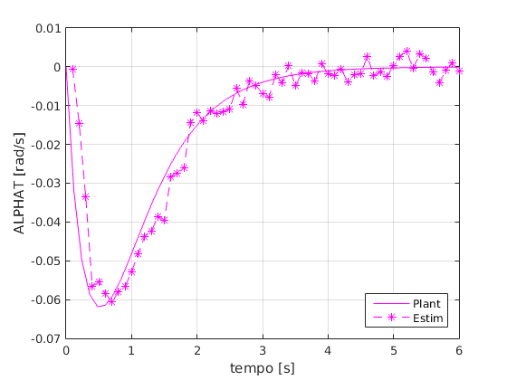 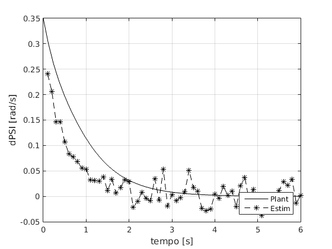
Cov. do erro
figure ax = gca; set(ax,'NextPlot','add','Box','on','XGrid','on','YGrid','on') p = plot(t(2:end),KKalmanopt(2:end-1),'r'); set(p,'Marker','*') ylabel('ganho de kalman') xlabel('tempo [s]')

figure ax = gca; set(ax,'NextPlot','add','Box','on','XGrid','on','YGrid','on') p = plot(t(2:end),Popt(2:end-1),'r'); set(p,'Marker','*') p = plot(t(2:end),Pantes(2:end-1),'g'); set(p,'Marker','*') l = legend('+','-'); set(l,'Location','NorthEast') ylabel('cov. erro') xlabel('tempo [s]')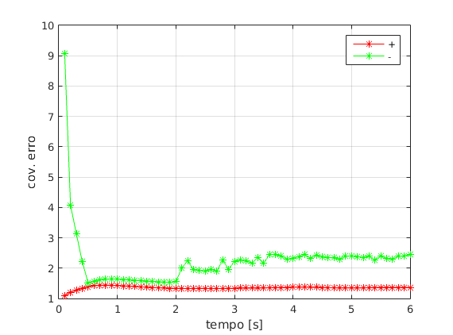
close all
Trajetória da estimativa
Usando o simulatorPlant para inicializar o Graphics do Kalman
gKalman = Graphics(simulatorKalman);
gKalman.Simulator.TSpan = t;
gKalman.Simulator.XT = XOUTopt(1:end-1,1);
gKalman.Simulator.YT = XOUTopt(1:end-1,2);
gKalman.Simulator.PSI = XOUTopt(1:end-1,3);
gKalman.Simulator.VEL = XOUTopt(1:end-1,4);
gKalman.Simulator.ALPHAT = XOUTopt(1:end-1,5);
gKalman.Simulator.dPSI = XOUTopt(1:end-1,6);
gKalman.TractorColor = 'b';
gKalman.Frame()
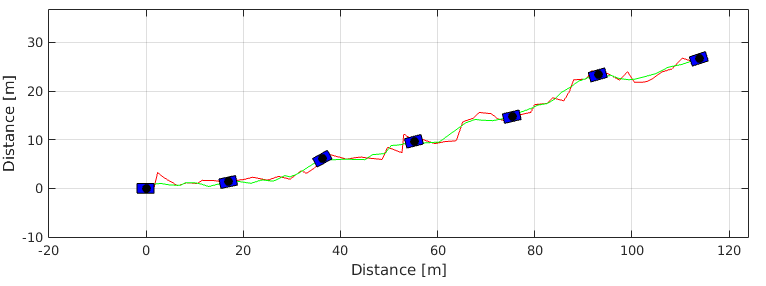 close all
gPlant.Frame(); hold on % gModel.Frame(); gKalman.Frame();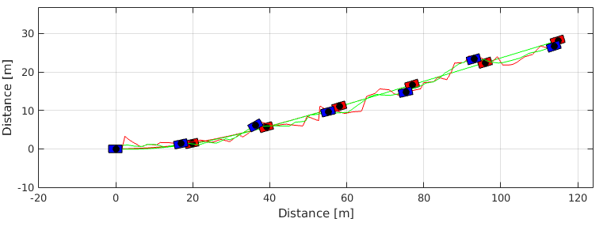